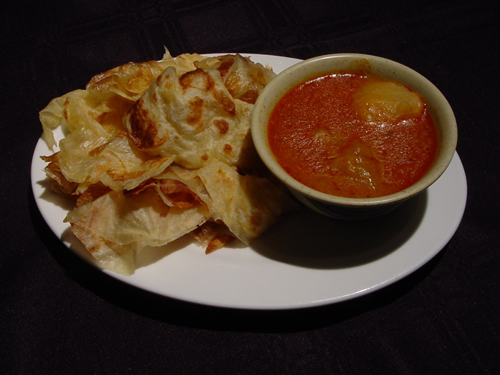
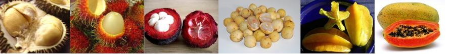

Lesson 23 Apa yang anda suka makan? (What do you like to eat?)

Click to listen to the Malay sentences.
A second reading (by Michelle Nor Ismat, a native speaker)
| I like to eat chicken. |
Saya suka makan ayam. |
| What do you like to eat? |
Anda suka makan apa? |
| I like to eat fish. |
Saya suka makan ikan. |
| My wife likes to eat prawns. |
Isteri saya suka makan udang. |
| Her husband likes to eat eggs and meat. |
Suaminya suka makan telur dan daging. |
| We eat rice every day. |
Kami* makan nasi tiap-tiap hari. |
Vocabulary
suka = to like
makan = to eat
ayam = chicken
ikan = fish
udang = prawns
keju = cheese
telur = egg
daging = meat |
*There are two words for "We" in Bahasa Malaysia, the "we inclusive" (i.e. the person to whom you are addressing is included) and the "we exclusive" (i.e. the person to whom you are addressing is not included). When a Malaysian says Kami makan nasi tiap-tiap hari (We eat rice every day) he is implying that the person to whom he is addressing is not included in what he says. If a Malaysian addresses another Malaysian (all Malaysians eat rice every day!) he will certainly say Kita makan nasi tiap-tiap hari (We eat rice every day).
For those who want to know more
daging means meat in general. If you want to be specific you can say daging lembu for beef, daging kambing for mutton and daging babi for pork (in case you do not already know you should not be eating pork or daging babi in the company of your Malay i.e. Muslim friends). In the case of chicken you do not say daging ayam but simply ayam.

About the most popular Malaysian dish is called nasi lemak (photo above), a humble yet appetizing dish (on the spicy side for most foreigners though) comprising rice cooked in coconut milk and served with almost anything (basic items being anchovies, fried peanuts, cucumber slices, chicken, hard-boiled egg and chili paste).
Then there is char koay teow (photo below), a dish that all Malaysians (and especially Penangites) can never have enough of at any time of the day or night. You can find the Char koay teow recipe here. By the way all the mouth-watering photos on this page come from the malaysatayhut.com website.

Other popular Malaysian food dishes are: rojak, satay (saté), laksa, roti canai, mi goreng, bihun, popiah... Sorry, I can't go on. I'm getting lapar already, are you? (I'm introducing this word only in Lesson 33 but I think you can guess its meaning here). Need a clue? It starts with the letter "h"!
My God, there is also the rendang daging or beef rendang (photo below). How could I have forgotten this dish? It's simply out of this world. The beef will simply melt in your mouth, if that is possible. But watch out, it can be a bit spicy on your palate!

Another favourite dish of Malaysians, taken at all times of the day and night, is called roti canai.

Find out for yourselves what the above dishes taste like when you are in Malaysia!
In fact while the watchword of many tourists in Malaysia is "Shop till you drop" the watchword of Malaysians is, without doubt, "Eat till you drop." No wonder someone has said that eating is one of the main hobbies of Malaysians!
By the way food is such an important aspect of Malaysian life that instead of the traditional Apa kabar? form of greeting Malaysians would instead ask Sudah makankah? (Have you eaten?) or Sudah makan belum?
And if your answer is Belum (= Not yet) please don't expect to be invited to lunch (for all you know your interlocutor might already have had his). It is just a conversation starter and will give you an opportunity to talk about the wonderful restaurant you just went to or the amount of work you have that prevented you from going out for lunch!
It's time now for me to introduce the Malay word for vegetables, which is sayur. "Oh, another word to learn" do I hear you protesting? Protest not, as this word will probably save the life of your vegetarian friend!
Another important word to learn is rice, the staple food of Malaysians. If you want plain white rice in a restaurant ask for nasi putih (putih means "white" remember?) while fried rice is nasi goreng. Yes, you guessed rightly. The word goreng means "to fry" or "fried". Thus fried fish would be ikan goreng and fried chicken ayam goreng (for those who have forgotten, the adjective always comes AFTER the noun in Malay, as mentioned in the very first lesson.)
Please note that there are two distinct words for cooked and uncooked rice in Malay. Rice that is already cooked (as in all the examples above) is nasi while uncooked rice that you buy from the supermarket is called beras. So if you wish to buy 3 kilos of rice to stock for one month you will have to say Saya hendak beli tiga kilo beras.
While on the subject of food you'll probably need to use these two adjectives at one time or another in your eating experience:
(i) sedap which means "delicious". In fact if you wish to praise your hostess's cooking you can add the suffix nya to it. Thus after putting some food into your mouth and tasting it you can say Ah, sedapnya  making the nya drag on for a full second or two! You can be sure that this will please your hostess no end! I know, earlier on you have learnt that nya is tagged on to a noun to indicate possession (bukunya means his or her book). But sedapnya here could be translated as "Isn't it delicious!" Another word for "delicious" is enak (it's pronounced as eh-nak). So each time you want to say that a dish is yummy just say sedap or enak! Or if you want to surprise everybody in the room, use the slang word that only locals (Malaysians or Singaporeans) use, and that is "shiok". Ah shiok sekalilah! (translated freely as "This is heavenly, man!" or "It is simply out of this world!") Coming from a foreigner you can be sure that this will bring about no end of laughter!
making the nya drag on for a full second or two! You can be sure that this will please your hostess no end! I know, earlier on you have learnt that nya is tagged on to a noun to indicate possession (bukunya means his or her book). But sedapnya here could be translated as "Isn't it delicious!" Another word for "delicious" is enak (it's pronounced as eh-nak). So each time you want to say that a dish is yummy just say sedap or enak! Or if you want to surprise everybody in the room, use the slang word that only locals (Malaysians or Singaporeans) use, and that is "shiok". Ah shiok sekalilah! (translated freely as "This is heavenly, man!" or "It is simply out of this world!") Coming from a foreigner you can be sure that this will bring about no end of laughter!
(ii) The second word you are likely to use when eating is pedas which means "spicy". I hope you will not have to use this word (though I doubt it very much) seeing that quite often even a local would find the curry a bit too spicy for his palate! So if you are able to say to your host and table companions Tidak, tidak pedas then I'll have to take my hat off to you (for being able to say that in Malay, but even more so, for your ability to eat spicy stuff!) But don't say it just to please your host and then suffer in silence for the rest of the night with a burnt tongue! Worse still you are likely to be served the same "hot" curry the next time you are invited to his house! So if I were you I would just say Sedap sekali tetapi pedas sedikit untuk saya. (= It's yummy indeed but a tad spicy for me). You can be sure you'll be invited again for being so appreciative of the food but this time you'll be served with a watered-down version of the curry!
In fact there is not one curry but different types of curry in Malaysia. The Malays, Chinese and Indians all have their own versions of curry. To make matters worse some States also have their own brand of curry, the curry of Kelantan being different from that of Penang!
By the way you might have heard of the expression bahasa rojak. It simply means incorrect Malay or Malay mixed with other languages like Chinese. This term comes from a popular Malaysian dish called rojak, a mixture of raw fruits and vegetables in a spicy sauce (which could create havoc with some delicate foreign stomachs, be warned!).
Popular Malaysian fruits

(from left, with the English names in brackets) durian, rambutan, manggis (mangosteen), langsat, belimbing (starfruit) and betik (papaya)
Now we come to the names of fruits ("fruits" is buah or buah-buahan in Malay). Typical Malaysian fruits (the first two have no equivalent name in English) are: durian, rambutan and manggis (mangosteen).
Ah, durian! The word alone is enough to make me take the first plane back to Malaysia. And yet foreigners often complain about its "stinking" smell. Actually if you don't like it it's simply because you're not a Malaysian, that's all. And as a foreigner you can be forgiven for not liking it. After all not many Malaysians appreciate cheese as much as you do. The durian is known as the "king of Malaysian fruits" although understandably, it is banned from 4 and 5-star hotels even in Kuala Lumpur or Penang because foreigners complain of its "stinking" smell.
Other common Malaysian fruits are: pisang (banana), betik (papaya), nanas (pineapple), tembikai (water-melon), belimbing (starfruit) and mempelam (mango).
There is also a yellow, grape-sized tropical fruit you find everywhere in Malaysia when it's in season called langsat, with varieties called duku, dokong and duku langsat. I particularly like duku langsat as when fully ripe it is really heavenly to the palate and one could continue eating one after another without stopping! Like grapes they too come in bunches. Not only humans love them, bats love them too - yes, that nocturnal flying mammal with wings that are a constant nightmare to langsat farmers.
The 3 main meals
While on the subject of eating you might have noticed that Malaysians eat at all times of the day and night - what with street hawkers selling delicious food in every corner of the street!
The three main meals are as follows:
makan pagi is breakfast
makan tengah hari is lunch
makan malam is dinner
Note that the three main meals of the day all start with the word makan meaning "to eat" (what else?) followed by the time of the day when it is taken i.e. pagi (morning) for breakfast, tengah hari (noon) for lunch and malam (night) for dinner.
Just think of the literal translation in English ("eat in the morning", "eat in the afternoon", "eat at night" and you won't go wrong). Did I hear you say "Elementary, my dear Watson"? You're right. Nothing can be easier than this!
If you are used to saying "Bon appétit" as the French do I doubt if you will find an equivalent expression in Malay as Malaysians, being epicureans (and who can blame them, with the rich diversity of appetizing dishes that they have), normally waste no time in preliminaries when it comes to eating! You might just hear Jemput makan (Please eat) or Silakan (Please help yourself) or simply Makan, makan (Eat, Eat!) said in a very hasty, impatient tone just before the "opening ceremony". And if I were you I would not keep my host waiting, because if you are not in a hurry to eat, he is (i.e. unless he is a Malaysian diplomat, in which case he has been trained to be patient even though he is craving to eat!)
However if you really must find the Malay equivalent of "Bon appétit" I guess you can say Selamat makan since we always start any wish at all with the word Selamat so you can't go wrong there. But if you want to impress your host (or cause a lot of laughter), you can always say Selamat menjamu selera (I can already hear your Malaysian hosts exclaiming "Wow, where did you learn your Malay from?") Well, if you want to give me some publicity, this is the occasion! Actually menjamu means "to serve" while selera means "appetite". Make sure you pronounce the word as sir-lay-ra or the laughter will be ON you!
You have already learnt that you go to a kedai kopi for a drink. Where then do you go for food? Well, "restaurant" has its counterpart in Malay (restoran) or you can also say kedai makanan (though you only use this for a very simple restaurant). Literally it means "food shop", the word makanan meaning food in general. Thus:
Saya belanja lima ratus ringgit tiap bulan untuk makanan. (I spend 500 ringgit a month on food).
or:
Saya belanja sebanyak lima ratus ringgit tiap bulan untuk makanan. (I spend as much as 500 ringgit a month on food).
Previous lesson
Table of Contents
Next lesson